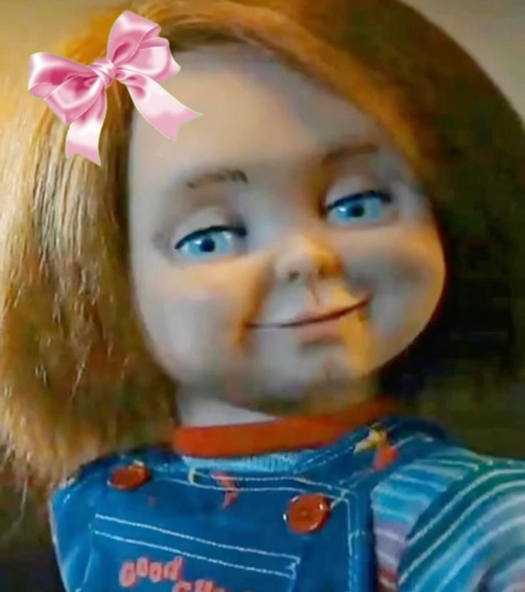
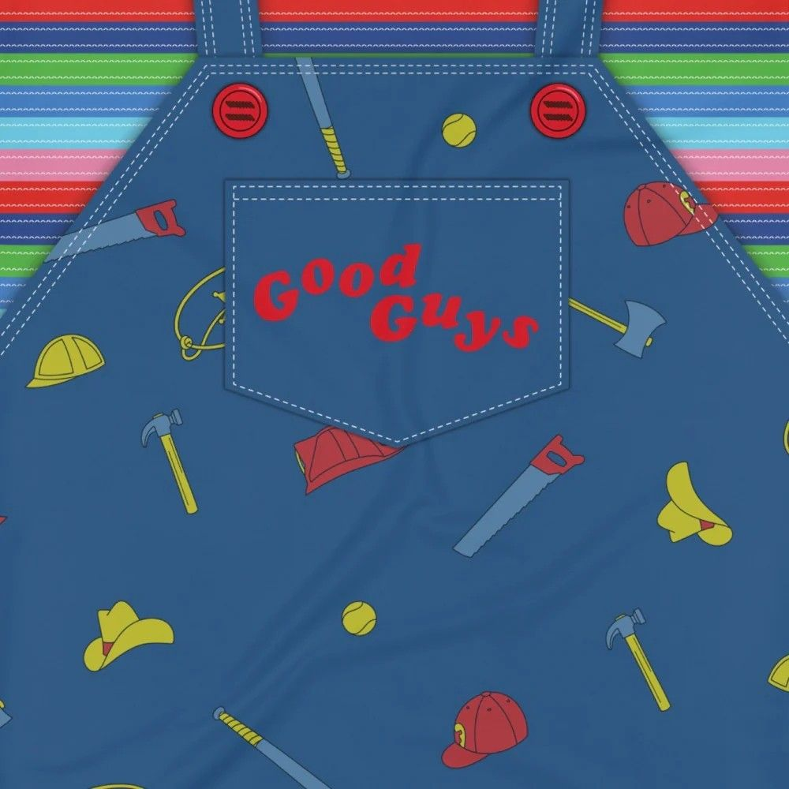
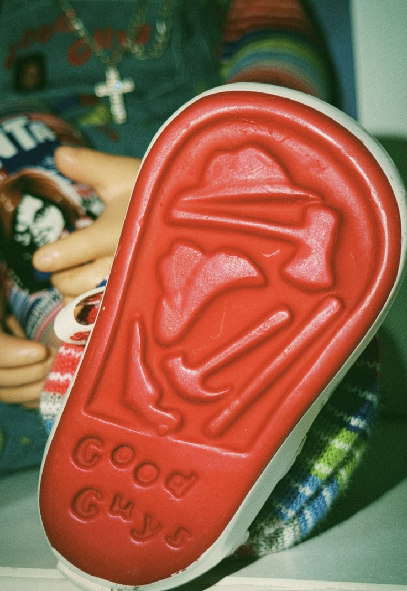

Algumas curiosidades

O nome humano de Chucky, Charles Lee Ray, não foi escolhido por acaso. Ele é a junção dos nomes de três dos assassinos mais infames da história dos Estados Unidos:
° Charles Manson (líder de seita e mandante de assassinatos)
° Lee Harvey Oswald (atentou contra o presidente John F. Kennedy)
° James Earl Ray (atentou contra Martin Luther King Jr.)
Para dar vida ao monstrinho, eram necessários entre 9 e 11 técnicos controlando o boneco simultaneamente no set: enquanto um operava as sobrancelhas por controle remoto, outros cuidavam dos olhos, da boca, dos braços e das pernas, exigindo uma sincronia perfeita.
Nas cenas em que o Chucky precisava correr, andar por cômodos ou quando foi queimado na lareira, a produção utilizou o ator de estatura baixa Ed Gale vestindo uma fantasia. Como Ed era cerca de 30% maior do que o tamanho estipulado para o boneco, a produção teve que construir cenários e móveis 30% maiores para que a escala do tamanho dele ficasse perfeita na tela

